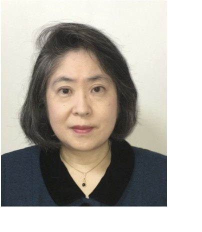

Home Research Publications Biography Contact

Associate Professor, Toyohashi University of Technology
Current Focus and Contributions: Yoshida's current research interests focus on sustainability engineering, emphasizing CO2 capture technologies and the chemical recycling of waste plastics. Her work in vacuum pyrolysis depolymerization is pivotal in recovering high-purity monomers, a testament to her commitment to environmental sustainability.
Background: Eri Yoshida obtained her Bachelor of Education from Tokyo Gakugei University, Japan. After completing her PhD in polymer chemistry at the Tokyo Institute of Technology, she joined the Kyoto Institute of Technology (KIT) as an Assistant Professor. At KIT, she engaged in macromolecular design, specifically through nitroxide-mediated controlled/living radical polymerization. In 1999, Yoshida expanded her research horizons as a visiting scientist at the University of North Carolina at Chapel Hill, USA, delving into the innovative use of supercritical CO2. She moved in 2004 to the Toyohashi University of Technology (TUT) as an Associate Professor. In 2016, Yoshida participated in a faculty exchange program at the City University of New York, Queens College, aiming to enrich engineering education at TUT. At TUT, she created a novel photo-controlled/living radical polymerization method using a nitroxide mediator and developed this method for the fabrication of artificial biomembrane models through polymerization-induced self-assembly. The models include villus-like structures formed by worm-like vesicles (Colloid Polym. Sci., 2015), nuclear envelope-mimicking spherical vesicles (Soft Matter, 2019), and vesicles that undergo the human erythrocyte-like transformations (Colloid Polym. Sci., 2022).
Awards and Recognition: Yoshida's contributions have been globally recognized. She has received several prestigious awards, including International Lifetime Achievement Award (International Multidisciplinary Innovations & Research Advancements Conclave 2026, IMIRAC), International Researcher Star Award (Scopus Index Conclave, Asia Research Awards, 2025), International Best Researcher Award (American Chamber of Research, 2024), Asia's Outstanding Researcher Award (Times of Research and the World Research Council, 2023), Coating Engineering Editor-in-Chief Award (Japan Coating Technology Association, 2011) for her article titled 'Synthesis of Functional Nanoparticles Through Polymer Self-Assembly in Supercritical Carbon Dioxide,' the Society of Japanese Women Scientists Award (2007) for creating novel 'non-amphiphilic' polymer micelles by controlled/living radical polymerization, and the SPSJ Award for Outstanding Paper in the Polymer Journal (1999) for her article titled 'Synthesis of Poly(ethylene adipate) with a Stable Nitroxyl Radical at Both Chain Ends and Its Application to Living Radical Polymerization,' the Award for Encouragement of Research in Polymer Science (1998) for her study on the macromolecular design based on living radical polymerization using stable nitroxyl radicals, and the Award for Promoting Lecture in the Chemical Society of Japan (1997) for her presentation titled 'Synthesis and Characterization of Polytetrahydrofuran-block-Polystyrene Block Copolymers Using Living Radical Polymerization.
Publications, Patents, and Editorial Roles: Yoshida has authored approximately 140 papers in esteemed international journals, contributed to 20 books, and holds 23 patents. She also serves as a member of the editorial boards of various international journals.